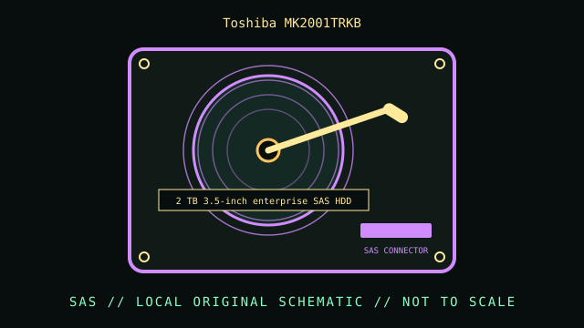

[ INDIVIDUAL COMPONENT // HARD DISK DRIVE ]
Toshiba MK2001TRKB
2 TB 3.5-inch enterprise SAS HDD. This record is limited to the exact model and documented variant; related model numbers, revisions and capacities can have different interfaces and specifications.

IDENTIFICATION: Match the complete label, suffix, firmware and drive inquiry with the cited model documentation. Do not infer sector format or recording method from product family alone.
Verified model specifications
| Dedicated catalog subcategory | SAS enterprise drives |
|---|---|
| Exact model | Toshiba MK2001TRKB |
| Product generation | 2 TB 3.5-inch enterprise SAS HDD |
| Form factor | 3.5-inch, 26.1 mm height; this classification is not a dimensional drawing. |
| Interface | SAS 6 Gb/s. |
| Capacity, performance, sector / recording details | 2 TB; 7200 RPM; 16 MB buffer, per the MKx001TRKB model family datasheet. The specific MK2001TRKB is the 2 TB SAS variant; do not substitute MK2002TSKB SATA data. |
| Compatibility | Requires a SAS controller and enterprise enclosure; SATA-only hosts will not enumerate it. Verify carrier, height, link speed, and controller support for its capacity/addressing. |
Handling, service & preservation
- Record the SAS inquiry data, firmware and existing defect/health status before reuse. Enterprise format/sector options can vary by product code; verify logical block size on the drive rather than initializing it to discover.
- Photograph the full label, board marks, connectors, jumpers/carrier, and date/firmware codes before service; retain the exact model suffix with collection metadata.
- Never open a hard drive outside a qualified clean environment. Stop repeated power-on attempts if the unit clicks, drops offline, or develops read errors.
- Preserve source data by making independent copies and validating checksums; SMART/self-tests cannot guarantee reliability. Distinguish measured condition from manufacturer specifications.
Model-specific source
- Toshiba MKx001TRKB / MKx002TSKB Enterprise HDD Datasheet (archival manufacturer sheet)Datasheet identifies the MK2001TRKB SAS model and distinguishes it from the MK2002TSKB SATA variant. Check suffix and revision.
For variants with family manuals, use the model-specific table and document revision that matches the drive label.